|
Roda JC - 1. FC Kaiserslautern (4-1) 11 januari 2005 |
Roda JC
- 1. FC Kaiserslautern (4-1) 11 januari 2005
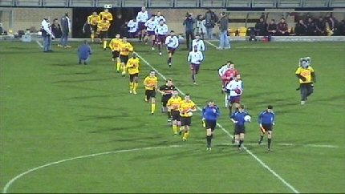
Tegen Kaiserslautern speelt Roda in de sterkste opstelling. Colinet speelt
op de plaats van Van Dessel, Kah vervolgt zijn proef-stage.
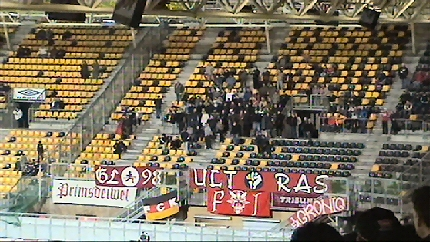
De kleine 100 meegereisde ultra's van Kaiserslautern.
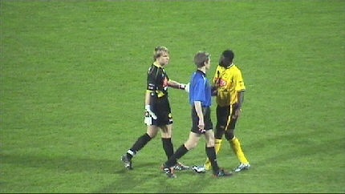
Kah is ook verbaal erg sterk en moet tegen de pietluttige
scheidsrechter
door Kujovic bedaard worden.
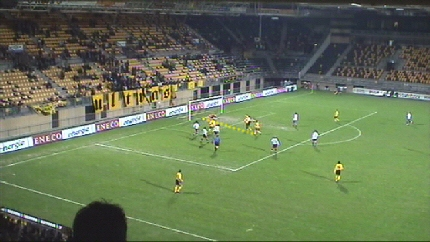
In de 11e min. scoort Van Dijk 1-0.
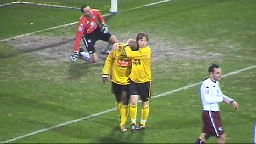
En dat met stevige wind tegen.
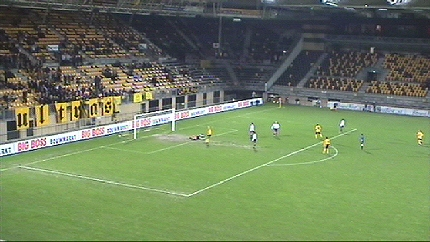
Vijf minuten later staat het al 2-0 door een goal van Kone.
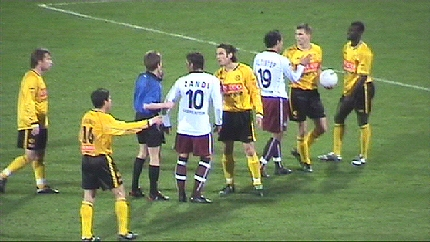
Er waren diverse irritaties.
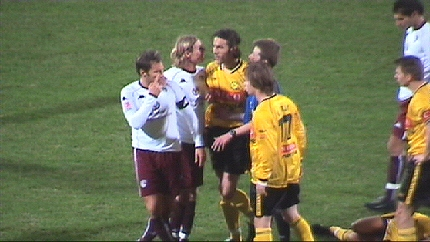
Hier ook weer.
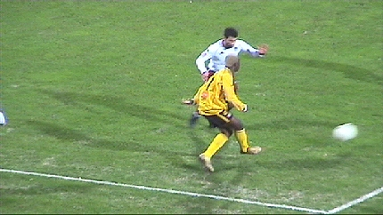
Voorbereidend werk van de weer schitterend spelende Kone.
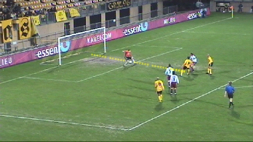
Met afrondend werk van Vicelich: 3-0 (29').
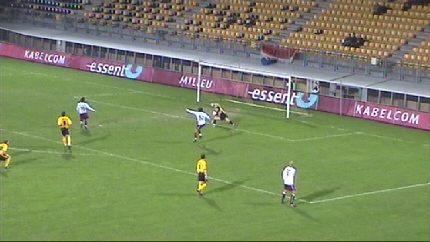
Dit feest gaat uiteraard niet door.
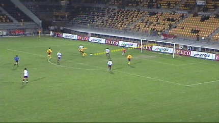
Nadat Kone zeer behendig zijn mannetje doldraait schiet hij prachtig 4-0 in
het net (57').
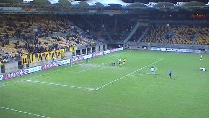
Bodor redt de Duitse eer door een doelpunt voor 1. FC Kaiserslautern te
scoren: 4-1, (67').
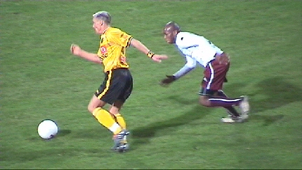
Na de komst van drifkikker en kilometervreter Bodnar kwam het publiek
zowaar nog een kwartiertje los.
De fluweelzachte techniek van Kone en het steenkolenvoetbal van Bodnar
vormen twee tegengestelde doch door het publiek zeer gewaardeerde
elementen in het huidige Roda.
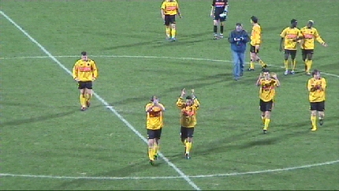
Roda JC boekt een simpel ogende en zeer verdiende overwinning op het
teleurstellende Kaiserslautern voor de ca. 2000 toeschouwers.
© Koempels Pleasure Dome